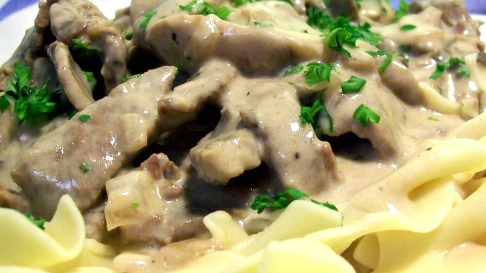

Daria's Slow Cooker Beef Stroganoff

This is a delicious stroganoff recipe. It's very easy and very tasty, using round steak along with mushrooms, onions, and chives.
Try serving it over hot, buttered noodles.
Ingredients
- 1 ½ pounds top round steak, cut into strips
- salt and pepper to taste
- ½ onion, chopped
- 1 (10.75 ounce) can condensed cream of mushroom soup
- 1 (8 ounce) can canned mushrooms
- ¼ cup water
- 1 tablespoon dried chives
- 1 clove garlic, minced
- 1 teaspoon Worcestershire sauce
- 1 cube beef bouillon
- ¼ cup white wine
- 1 tablespoon all-purpose flour
- 1 (16 ounce) container sour cream
- ½ cup chopped fresh parsley
Steps
- Place the beef in the bottom of a slow cooker, and season with salt and pepper to taste.
Place onion on top of beef, and then add mushroom soup, mushrooms, and water.
Season with chives, garlic, Worcestershire sauce, and bouillon.
- In a small bowl, mix together the wine with the flour. Pour over the beef.
- Cover, and cook on Low for 6 to 7 hours. Stir in the sour cream and parsley, and continue cooking for 1 hour.